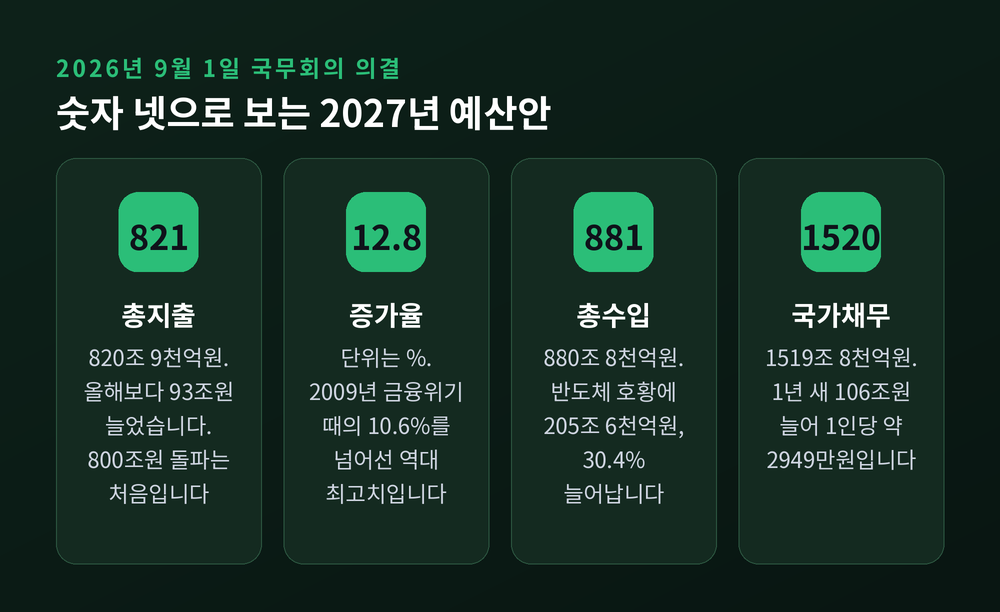
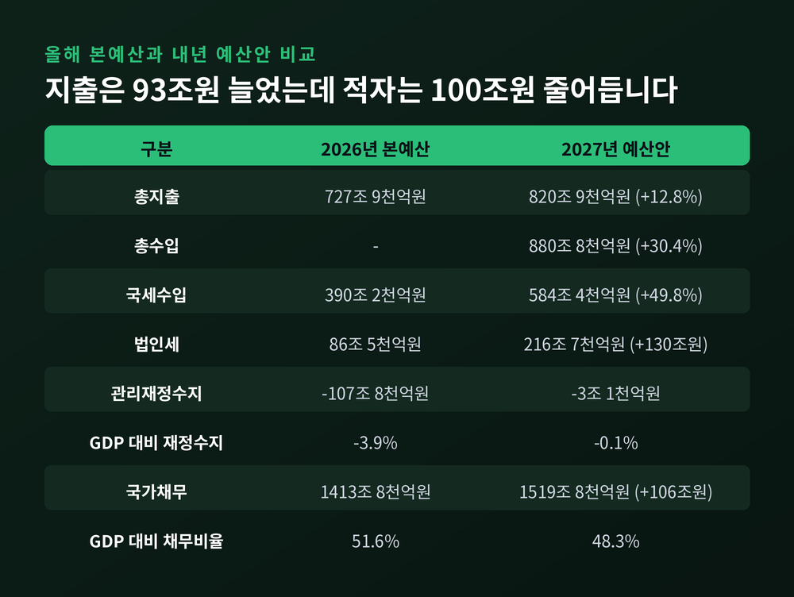
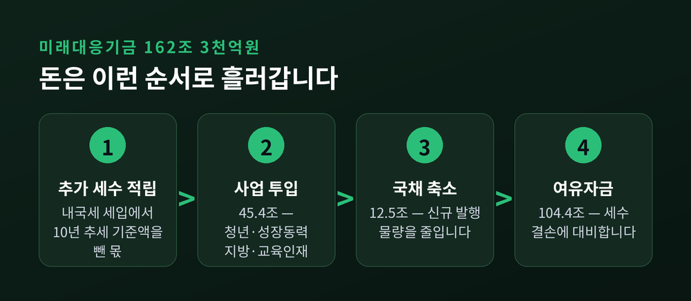
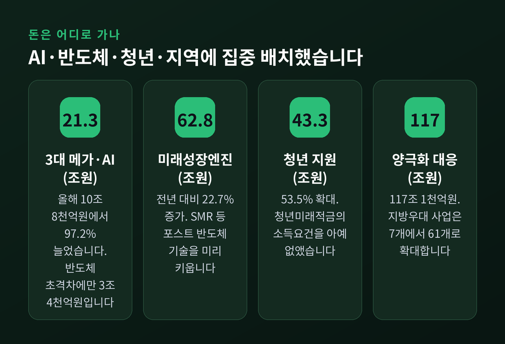
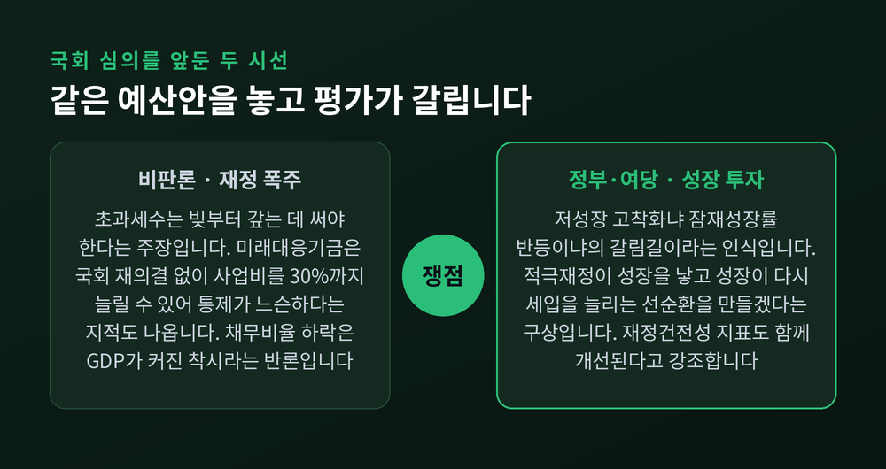

2027년 예산안 820조9천억 의결, 역대 최대 확장재정인 이유

2026년 9월 1일 국무회의에서 2027년도 예산안이 의결됐습니다. 이번 글에서는 총지출 820조 9천억원이라는 숫자가 어떻게 나왔는지, 재원과 나랏빚은 어떤 구조인지, 국회에서 무엇이 부딪힐지를 차례로 정리하겠습니다.
세 줄 요약
- 2027년 총지출은 820조 9천억원입니다. 올해 본예산보다 93조원, 12.8% 늘었습니다. 증가율은 역대 최고입니다.
- 재원은 반도체 호황이 만든 세수입니다. 국세수입이 194조원 넘게 늘면서 관리재정수지 적자는 3조원대까지 줄어듭니다.
- 다만 국가채무는 106조원 늘어 1,519조 8천억원이 됩니다. 162조 3천억원 규모 미래대응기금이 국회 심의의 최대 쟁점입니다.
■ 무슨 일이 있었나 — 800조원 시대의 개막
정부는 9월 1일 국무회의를 열고 2027년도 예산안과 2026~2030 국가재정운용계획을 함께 의결했습니다. 국무회의는 이재명 대통령이 직접 주재했습니다.
총지출은 820조 9천억원입니다. 올해 본예산 727조 9천억원보다 93조원 늘었습니다. 증가율로는 12.8%입니다.
두 가지 기록이 동시에 깨졌습니다. 총지출이 800조원을 넘어선 것은 사상 처음입니다. 그리고 12.8%라는 증가율은 글로벌 금융위기에 대응하던 2009년의 10.6%를 웃도는 역대 최고치입니다.
편성 실무는 기획예산처가 맡았습니다. 박홍근 기획예산처 장관은 8월 28일 정부세종청사 브리핑에서 예산안의 얼개를 먼저 설명한 바 있습니다. 정부는 국가재정법이 정한 시한에 맞춰 9월 3일까지 예산안을 국회에 제출합니다.

■ 숫자로 보는 2027년 예산안
말보다 표가 빠릅니다. 올해 본예산과 내년 예산안을 나란히 놓아 보겠습니다.
| 항목 | 2026년 본예산 | 2027년 예산안 | 증감 |
|---|---|---|---|
| 총지출 | 727조 9천억원 | 820조 9천억원 | +93조원 (+12.8%) |
| 총수입 | — | 880조 8천억원 | +205조 6천억원 (+30.4%) |
| 국세수입 | 390조 2천억원 | 584조 4천억원 | +194조 2천억원 (+49.8%) |
| 법인세 | 86조 5천억원 | 216조 7천억원 | +130조 2천억원 |
| 관리재정수지 | -107조 8천억원 | -3조 1천억원 | 100조원 넘게 축소 |
| GDP 대비 재정수지 | -3.9% | -0.1% | 3.8%p 개선 |
| 국가채무 | 1,413조 8천억원 | 1,519조 8천억원 | +106조원 |
| GDP 대비 채무비율 | 51.6% | 48.3% | 3.3%p 하락 |
표의 한가운데에 이번 예산안의 성격이 있습니다. 지출을 93조원 늘렸는데 재정적자는 오히려 100조원 넘게 줄어듭니다. 관리재정수지 -0.1%는 사실상 균형에 가까운 수치이며, 2007년 흑자 이후 20년 만에 가장 양호한 수준입니다.

■ 왜 역대급 확장이 가능했나 — 반도체가 만든 세수
답은 법인세에 있습니다.
내년 국세수입은 584조 4천억원으로 전망됐습니다. 올해 본예산 390조 2천억원에서 194조 2천억원, 비율로는 49.8% 늘어난 규모입니다. 이 가운데 법인세가 86조 5천억원에서 216조 7천억원으로 뜁니다. 1년 만에 130조원 넘게, 두 배 이상 불어나는 셈입니다.
반도체 슈퍼사이클이 만든 기업 실적이 세수로 돌아온 결과입니다. 예전엔 확장재정을 하려면 적자국채부터 늘려야 했습니다. 지금은 걷힌 세금이 지출 증가분을 상당 부분 감당합니다. 이 지점이 이번 예산안이 이전과 결정적으로 다른 대목입니다.
정부는 지출 구조조정도 함께 했다고 밝혔습니다. 재량지출에서 역대 최대인 38조 6천억원을 절감했고, 전체의 10%가 넘는 2,100여 개 사업을 폐지했습니다. 55년간 유지돼 온 교육교부금의 내국세 연동 구조도 손질 대상에 올랐습니다.
물론 반도체 경기는 순환합니다. 지금의 세수 호황이 몇 해나 이어질지는 누구도 장담하지 못합니다. 정부가 늘어난 세수를 전부 쓰지 않고 일부를 남겨두기로 한 배경입니다.
■ 미래대응기금 162조 3천억원 — 이번 예산안의 심장
이번 예산안에서 가장 낯설고, 가장 논쟁적인 장치가 미래대응기금입니다.
기금의 재원은 '추가 세수'입니다. 내년 내국세 세입예산에서 최근 10년간의 증가 추세를 반영한 기준액을 뺀 금액이 기준이 됩니다. 여기에 추가 세수와 연동돼 지자체와 교육청으로 자동 배분되는 지방교부세·교육교부금 몫도 기금으로 돌립니다. 이렇게 모은 금액이 162조 3천억원입니다.
돈의 흐름은 세 갈래입니다.
- 사업성 지출 45조 4천억원 — 청년, 성장동력, 지방, 교육·인재 4대 분야에 투입합니다.
- 국채 신규발행 축소 12조 5천억원 — 새로 찍을 국채 물량을 그만큼 줄이는 데 씁니다.
- 여유자금 104조 4천억원+α — 세수가 흔들리거나 결손이 날 때를 대비해 쌓아둡니다.
계정별로는 총괄계정에 109조 4천억원, 지방 계정에 15조 3천억원, 성장동력 계정에 14조 2천억원, 청년 계정에 13조 3천억원, 교육·인재 계정에 10조 1천억원이 배정됐습니다.
기금 규모는 더 커질 수도 있습니다. 정부는 9월 세입 재추계에서 올해 내국세가 예상보다 더 걷히면 그 초과분도 적립할 계획입니다. 초과세수가 30조~50조원에 이르면 기금은 200조원 안팎까지 불어납니다.

■ 돈은 어디로 가나 — AI·반도체·청년·지역
분야별로 보면 보건·복지·고용에 289조원, 일반·지방행정에 149조원, 교육에 110조 7천억원, 국방에 73조 3천억원이 배정됐습니다. 증가율이 가장 높은 분야는 산업·중소기업·에너지로 29.7%입니다.
중점 투자 항목은 네 갈래로 정리됩니다.
첫째, 3대 메가프로젝트와 AI입니다. 관련 예산이 올해 10조 8천억원에서 내년 21조 3천억원으로 늘어납니다. 증가율은 97.2%, 거의 두 배입니다. 세부적으로는 프런티어급 AI 모델과 '모두의 AI' 구축에 12조 2천억원, 반도체 초격차에 3조 4천억원, 피지컬 AI 육성에 3조 1천억원이 들어갑니다. 반도체 예산만 놓고 보면 올해 1조 3천억원의 약 2.6배입니다.
둘째, 미래성장엔진입니다. 62조 8천억원으로 전년 대비 22.7% 늘었습니다. 소형모듈원전(SMR)을 비롯한 7대 국가전략 핵심기술과 에너지 전환, 창업, K콘텐츠, 중소기업 지원을 아우릅니다. '포스트 반도체'를 미리 찾아두겠다는 취지입니다.
셋째, 청년입니다. 성장단계별 청년 지원 예산이 28조 2천억원에서 43조 3천억원으로 53.5% 늘었습니다. 눈에 띄는 변화는 청년미래적금입니다. 연소득 7,500만원 이하라는 가입 요건을 아예 없앴고, 예산도 7천억원에서 1조 7천억원으로 확대했습니다. 정부 기여금은 일반형 6%, 우대형 15%, 비수도권 중소기업 재직 청년 25%로 차등을 뒀습니다. 주거 쪽에서는 청년 주거 예산이 9조 6천억원에서 18조 5천억원으로 두 배 가까이 늘고, 청년 대상 공공임대주택 공급은 10만 6천호로 확대됩니다.
넷째, 지역입니다. 지방우대 원칙을 적용하는 사업을 7개에서 61개로 늘렸습니다. '5극3특' 지원을 위한 초광역특별계정도 신설합니다. 행정통합에는 연간 최대 5조원, 4년간 최대 20조원의 인센티브가 걸려 있습니다. 이른바 'K자형 양극화 대응' 예산은 85조 7천억원에서 117조 1천억원으로 늘었습니다.

■ 세수가 194조 늘었는데 나랏빚은 왜 106조 늘어날까
이번 예산안에서 가장 많은 사람이 갸웃하는 대목입니다.
세수가 194조원 늘고 재정적자가 3조원대로 줄었는데, 국가채무는 1,413조 8천억원에서 1,519조 8천억원으로 106조원 늘어납니다. 국가데이터처 추계인구로 단순 환산한 1인당 국가채무도 약 2,739만원에서 약 2,949만원으로 210만원가량 증가합니다.
이유는 간단합니다. 정부가 늘어난 세수의 상당액을 빚을 갚는 대신 미래대응기금에 적립하기로 했기 때문입니다. 기금에 쌓인 돈은 자산이지만, 그 사이 국채는 계속 굴러갑니다.
GDP 대비 국가채무비율이 51.6%에서 48.3%로 떨어지는 것도 함께 봐야 합니다. 비율이 낮아진 건 분자인 채무가 줄어서가 아닙니다. 분모인 명목 GDP가 반도체 호황으로 크게 늘었기 때문입니다. 비율 개선과 채무 감소는 다른 이야기입니다.
이자 부담도 무겁습니다. 내년 국채 이자 비용은 사상 처음 40조원을 넘어 42조원대에 이를 것으로 전망됩니다. 반도체와 피지컬 AI 등 첨단산업 육성에 쓰는 산업·중소기업·에너지 분야 예산 전체(41조 2천억원)보다 큰 금액입니다.
■ 국회로 넘어간 공, 쟁점은 세 가지
예산안은 9월 3일 국회로 넘어갑니다. 22대 국회 후반기 첫 정기국회가 막 시작됐습니다. 쟁점은 크게 셋입니다.
첫째, 초과세수를 어디에 쓸 것인가.
정부와 여당은 성장 투자를 택했습니다. 이재명 대통령은 국무회의에서 "지금 우리는 저성장 고착화냐, 잠재성장률 반등이냐의 갈림길에 서 있다"고 말했습니다. 박홍근 장관은 "적극재정과 경제성장의 선순환 구조를 안착시키겠다"고 밝혔습니다. 더불어민주당 정책위원회는 "대전환·대도약을 위한 담대한 투자"라고 평가했습니다.
야당의 시각은 정반대입니다. 국민의힘은 "초과세입이 발생했다고 지출을 확대하면 언제 국채를 상환해 미래세대의 부담을 줄여주느냐"고 반문했습니다. 예결특위 국민의힘 간사인 유상범 의원은 초과세수를 기금이 아니라 국채 상환에 써야 한다는 대안을 제시했습니다.
둘째, 미래대응기금을 어떻게 통제할 것인가.
기획예산처가 입법예고한 국가재정법 개정안은 미래대응기금의 주요항목 지출액을 30% 이하 범위에서 국회 재심의 없이 변경할 수 있게 했습니다. 국회가 승인한 10조원짜리 사업을 추가 의결 없이 13조원으로 늘릴 수 있다는 뜻입니다. 일반 사업성 기금의 변경 한도인 20%보다 재량이 큽니다.
'상시 추경'이라는 지적, '정부 쌈짓돈'이라는 비판이 여기서 나옵니다. 송언석 국민의힘 의원은 "국가채무를 갚아야 할 초과세수로 기금을 조성하겠다는 발상 자체가 잘못됐다"고 말했습니다.
정부 설명은 다릅니다. 기획예산처 관계자는 "미래대응기금도 49개 사업성 기금과 똑같이 운용계획을 변경할 수 있어 다를 게 없다"며 "GPU처럼 기술 변화가 빠른 분야는 신속하고 탄력적인 투자가 필요하다"고 반박했습니다.
셋째, 재정과 통화정책의 방향이 맞느냐.
국민의힘은 한국은행이 기준금리를 연속 인상하며 긴축으로 돌아선 상황에서 정부가 확장재정을 펴는 것은 "심각한 정책 엇박자"라고 주장합니다. 반면 정부·여당은 세입 증가로 재정건전성 지표가 함께 개선되고 있다는 점을 근거로 듭니다.

■ 앞으로의 전망
정부는 내년의 확장을 일시적인 것으로 설명합니다. 2026~2030 국가재정운용계획을 보면 총지출은 2028년 894조 6천억원, 2029년 957조 4천억원을 거쳐 2030년 1,005조 2천억원으로 1,000조원을 넘어섭니다. 다만 증가율은 내년 12.8%에서 2030년 5.0%까지 단계적으로 낮춥니다. 임기 초반에 성장동력에 몰아 넣고, 이후 속도를 줄이겠다는 구상입니다.
목표치도 제시됐습니다. 2030년까지 관리재정수지는 GDP 대비 -3% 이내, 국가채무비율은 50% 미만인 49% 수준으로 관리한다는 계획입니다. 그럼에도 채무의 절대 규모는 2030년 1,700조원 수준으로 늘어날 전망입니다.
관건은 두 가지입니다. 하나는 반도체 호황이 계획 기간 내내 버텨줄 것인가입니다. 세수 전망이 어긋나면 확장의 전제가 무너집니다. 다른 하나는 늘린 예산이 실제로 잠재성장률을 끌어올릴 것인가입니다. 투입은 확인 가능하지만 성과는 몇 해 뒤에나 드러납니다.
국회 심의 과정에서 미래대응기금은 상당한 진통을 겪을 가능성이 큽니다. 기금 자체가 국가재정법 개정을 전제로 하기 때문에, 예산안 심의와 법 개정 협상이 맞물립니다. 민주당은 원안 사수, 국민의힘은 대대적 삭감을 예고한 상태입니다.
정리하면 이렇습니다.
2027년 예산안은 "반도체가 벌어온 돈을 미래에 먼저 쓰겠다"는 선언입니다. 세수 호황이 없었다면 나올 수 없는 규모이고, 동시에 그 호황이 꺾이면 가장 먼저 흔들릴 구조이기도 합니다.
정부의 판단이 옳은지 그른지는 아직 알 수 없습니다. 다만 분명한 것은 하나입니다. 이 예산이 성장으로 돌아오지 않으면, 남는 것은 1,500조원을 넘어선 나랏빚과 40조원대 이자뿐입니다. 반대로 성공한다면 잠재성장률 반등의 출발점으로 기록될 것입니다.
내년 12월, 국회를 통과한 최종안이 정부안과 얼마나 달라져 있을지. 그 차이가 이번 논쟁의 결론을 대신 말해 줄 것이라고 생각합니다.
알림 — 이 글은 공개된 정부 발표와 언론 보도를 바탕으로 한 정보 제공 목적의 해설이며, 특정 종목이나 자산에 대한 투자 권유가 아닙니다. 예산안은 국회 심의 과정에서 변경될 수 있으므로, 최종 확정 내용은 국회 의결 후 공식 자료를 확인하시기 바랍니다.